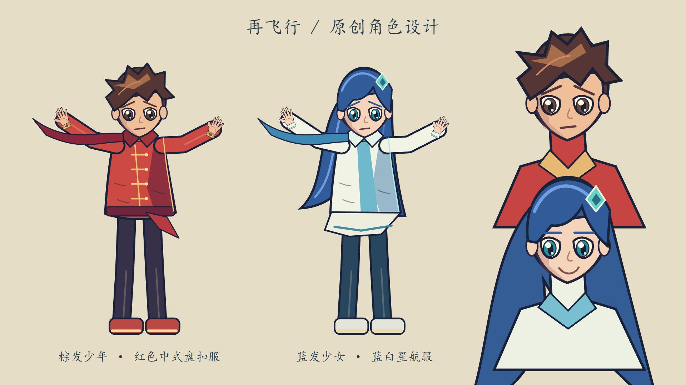
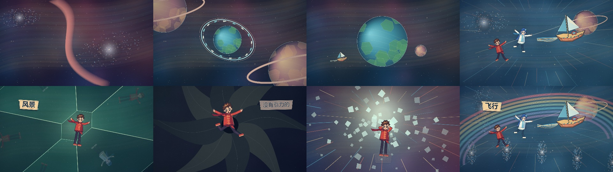

CODE DRAWN / SPACE ADVENTURE
再飞行
红蓝相逢，向着更远的星海。
1920 × 1080 · 24 fps
H.264 · AAC 44.1 kHz 双声道
打开完整 MV
制作与验收报告
65 镜头时间表
参考分析
句级 SRT
15 秒高潮样片 · 歌曲 60–75 秒
样片内部检查记录
角色与场景设计


画面采用原创 Canvas 路径、骨架姿态与程序纹理绘制。参考帧仅用于分析。句内短语时间为起音估计，详细精度说明见报告。